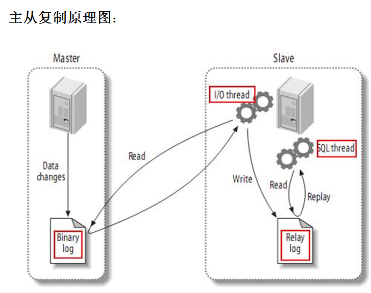

MySQL主从复制概述
复制是mysql数据库提供的一种高可用、高性能的解决方案，一般用来建立大型的应用；
mysql支持单向，双向，链式级联，异步复制,半同步制(mysql5.5版本之后)，复制过程中,一台服务器当主master，而一个或者多个服务器slave；
复制可以是单向：M-->S,也可以双向M<-->M
如设置了链式级联复制，那么从服务器本身除了充当slave之外，还是其下面从服务器的主服务器结构如是：
复制可以是单向：M-->S,也可以双向M<-->M
如设置了链式级联复制，那么从服务器本身除了充当slave之外，还是其下面从服务器的主服务器结构如是：
M-->S1-->S2-->S3的复制形式
单向主从复制
master --> slave
一主多从模式
-------slave1
|
master——|------slave2
|
-------slave3
线性级联模式
master --> slave1 --> salve2 --> slave3
双主模式，互为主从
master <--> master
其他，结合起来使用，如
master <--> master
|
slave
mysql主从复制原理

复制分为三个步骤：
- 主服务器将数据更新记录到二进制日志中；
- 从服务器把主服务器的二进制日志拷贝到自己的中继日志中；
- 从服务器重做中继日志中的时间，把更新应用到自己的数据库上；
主服务器中的线程：
I/O线程
接收到从库发来的请求后，负责给从库发送二进制日志；
从库中的线程：
I/O线程
接收主库发来的二进制日志，并将其保存在自己的中继日志中
sql线程
来复制中继日志中的日志
主动复制分为异步复制、半同步复制和基于GTID的复制；
- 异步复制：MySQL复制默认是异步复制，Master将事件写入binlog，但并不知道Slave是否或何时已经接收且已处理。在异步复制的机制的情况下，如果Master宕机，事务在Master上已提交，但很可能这些事务没有传到任何的Slave上。假设有Master->Salve故障转移的机制，此时Slave也可能会丢失事务。
- 半同步复制：当Slave主机连接到Master时，能够查看其是否处于半同步复制的机制，当Master上开启半同步复制的功能时，至少应该有一个Slave开启其功能。此时，一个线程在Master上提交事务将受到阻塞，直到得知一个已开启半同步复制功能的Slave已收到此事务的所有事件，或等待超时。当一个事务的事件都已写入其relay-log中且已刷新到磁盘上，Slave才会告知已收到，如果等待超时，也就是Master没被告知已收到，此时Master会自动转换为异步复制的机制。当至少一个半同步的Slave赶上了，Master与其Slave自动转换为半同步复制的机制。半同步复制的功能要在Master，Slave都开启，半同步复制才会起作用；否则，只开启一边，它依然为异步复制

主从复制应用场景
主从复制有利于数据库架构的健壮性，提升访问速度，易于管理；
主从服务器互为备份
M-S服务器架构的设置，可以大大的加强数据库架构的健壮性，当主库出现问题，可以切换到从库，从而不影响正常生产业务的进行；
主从复制读写分离分担网站压力
主从服务器架构通过程序(php,java）对客户端的请求实现读写分离，在从服务器上仅仅处理用户的select查询请求，降低用户查询响应时间，以及读写操作同时在主服务器带来的压力；
GTID主从复制
一、GTID的概述：
- 全局事物标识：global transaction identifieds。
- GTID事物是全局唯一性的，且一个事务对应一个GTID。
- 一个GTID在一个服务器上只执行一次，避免重复执行导致数据混乱或者主从不一致。
- GTID用来代替classic的复制方法，不在使用binlog+pos开启复制。而是使用master_auto_postion=1的方式自动匹配GTID断点进行复制。
- MySQL-5.6.5开始支持的，MySQL-5.6.10后开始完善。
- 在传统的slave端，binlog是不用开启的，但是在GTID中，slave端的binlog是必须开启的，目的是记录执行过的GTID（强制）
二、GTID的组成部分：
- 前面是server_uuid：后面是一个序列号
- 例如：server_uuid：sequence number
- 7800a22c-95ae-11e4-983d-080027de205a:10
- UUID：每个mysql实例的唯一ID，由于会传递到slave，所以也可以理解为源ID。
- Sequence number：在每台MySQL服务器上都是从1开始自增长的序列，一个数值对应一个事务。
三、GTID比传统复制的优势：
- 更简单的实现failover，不用以前那样在需要找log_file和log_Pos。
- 更简单的搭建主从复制。
- 比传统复制更加安全。
- GTID是连续没有空洞的，因此主从库出现数据冲突时，可以用添加空事物的方式进行跳过。
四、GTID的工作原理：
- master更新数据时，会在事务前产生GTID，一同记录到binlog日志中。
- slave端的i/o 线程将变更的binlog，写入到本地的relay log中。
- sql线程从relay log中获取GTID，然后对比slave端的binlog是否有记录。
- 如果有记录，说明该GTID的事务已经执行，slave会忽略。
- 如果没有记录，slave就会从relay log中执行该GTID的事务，并记录到binlog。
- 在解析过程中会判断是否有主键，如果没有就用二级索引，如果没有就用全部扫描。
五、GTID的限制：
- 不支持非事务引擎（从库报错，stopslave; start slave; 忽略）
- 不支持create table … select 语句复制（主库直接报错）
- 不允许在一个SQL同时更新一个事务引擎和非事务引擎的表
- 在一个复制组中，必须要求统一开启CTID或是关闭GTID
- 开启DTID需要重启（5.7中可能不需要）
- 开启DTID后，就不在使用原来的传统的复制方式
- 对于createtemporary table 和drop temporary table语句不支持
- 不支持sql_slave_skip_counter